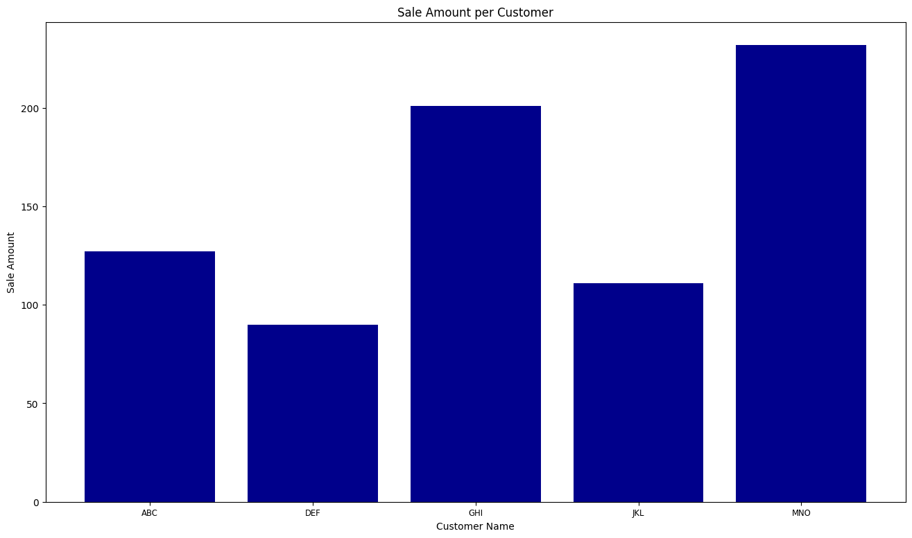
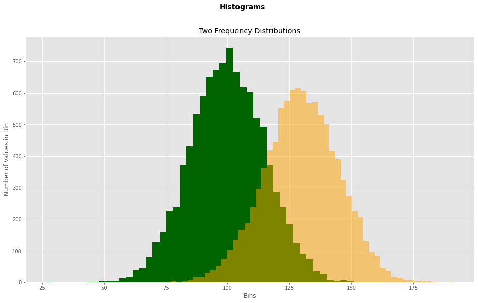
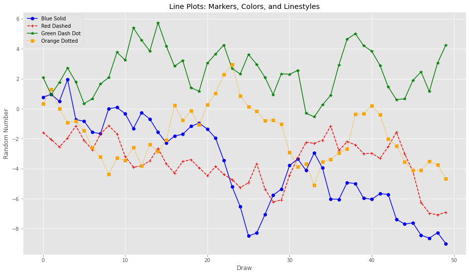

import numpy as np
import matplotlib.pyplot as plt条形图
# 数据准备
customers = ['ABC', 'DEF', 'GHI', 'JKL', 'MNO']
customers_index = range(len(customers))
sale_amounts = [127, 90, 201, 111, 232]fig = plt.figure(figsize=(16,9)) # figsize确定像素比
# plt.style.use('ggplot') 使用 ggplot 风格
ax1 = fig.add_subplot(1, 1, 1) # 创建子图
# customer_index设置条形图在x轴上的位置；sale_amounts设置条形的高度；align='center'设置x轴标签处于条形中间
ax1.bar(customers_index, sale_amounts, align='center', color='darkblue')
ax1.xaxis.set_ticks_position('bottom') # 设置刻度位置
ax1.yaxis.set_ticks_position('left')
plt.xticks(customers_index, customers, rotation=0, fontsize='small') # 设置刻度值
plt.xlabel('Customer Name') # 设置x轴标签
plt.ylabel('Sale Amount') # 设置y轴标签
plt.title('Sale Amount per Customer') # 设置图形标题
plt.savefig('bar_plot.png', dpi=100, bbox_inches='tight') # 保存图片；设置图形分辨率；将图形四周空白部分去掉
plt.show()
直方图
# 数据准备
mu1, mu2, sigma = 100, 130, 15
x1 = mu1 + sigma * np.random.randn(10000)
x2 = mu2 + sigma * np.random.randn(10000)fig = plt.figure(figsize=(16, 9))
plt.style.use('ggplot')
ax1 = fig.add_subplot(1, 1, 1)
n, bins, patches = ax1.hist(x1, bins=50, color='darkgreen')
n, bins, patches = ax1.hist(x2, bins=50, color='orange', alpha=0.5)
ax1.xaxis.set_ticks_position('bottom')
ax1.yaxis.set_ticks_position('left')
plt.xlabel('Bins')
plt.ylabel('Number of Values in Bin')
fig.suptitle('Histograms', fontsize=14, fontweight='bold')
ax1.set_title('Two Frequency Distributions')
plt.show()
折线图
# 数据准备
plot_data1 = np.random.randn(50).cumsum()
plot_data2 = np.random.randn(50).cumsum()
plot_data3 = np.random.randn(50).cumsum()
plot_data4 = np.random.randn(50).cumsum()fig = plt.figure(figsize=(16, 9))
ax1 = fig.add_subplot(1, 1, 1)
ax1.plot(plot_data1, marker=r'o', color=u'blue', linestyle='-', label='Blue Solid')
ax1.plot(plot_data2, marker=r'+', color=u'red', linestyle='--', label='Red Dashed')
ax1.plot(plot_data3, marker=r'*', color=u'green', linestyle='-', label='Green Dash Dot')
ax1.plot(plot_data4, marker=r's', color=u'orange', linestyle=':', label='Orange Dotted')
ax1.xaxis.set_ticks_position('bottom')
ax1.yaxis.set_ticks_position('left')
ax1.set_title('Line Plots: Markers, Colors, and Linestyles')
plt.xlabel('Draw')
plt.ylabel('Random Number')
plt.legend(loc='best')